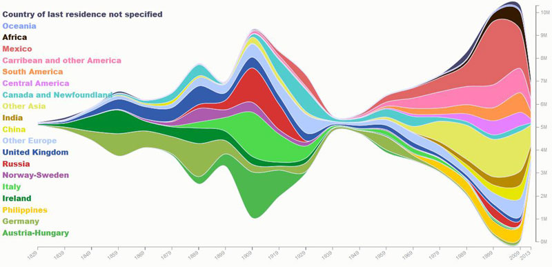
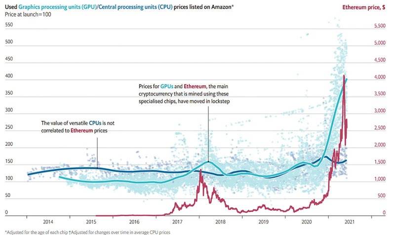
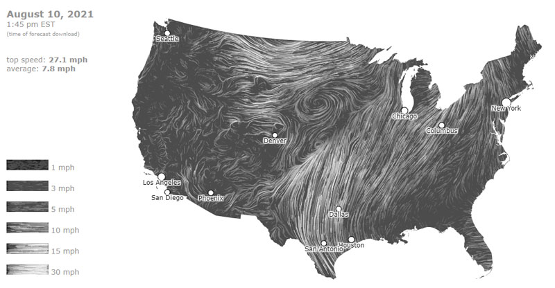
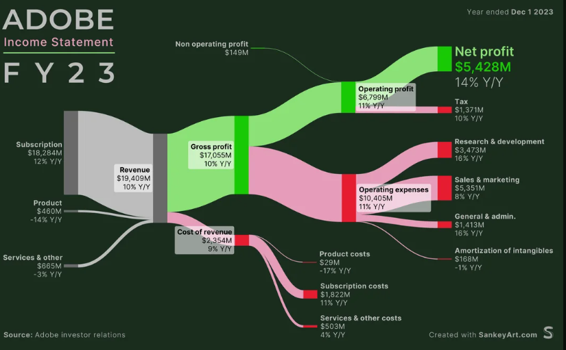

Below you can find different media that has influenced or inspired me as a data student. Many of these make me want to learn more and be better. A couple of the TED talks are the reason I chose to specialize in Data Analytics at Dublin City University. I believe the influence of media on the world cannot be understated and the reach it can have is enormous.
Different visualizations that are of particular interest to me. I feel these charts are able to clearly
articulate the data to the reader. Additionally, as a reader, reading these charts makes me want to do my own
further research and examine the data more.
As a history buff, this visual is one of my favorite visualizations ever. I love seeing the difference
between the pre and post-World War 2 immigration. In the post-World War 2 world, there rose a large jump
in immigration from the Eastern world and a significant drop in European immigrants.

This visualization not only informs but also sparks my curiosity. It is really interesting to see
the relationship between Cryptocurrencies like Ethereum and EPU prices. This graphic inspired me to
do my own research and learn more unique relationships involving cryptocurrencies.

This is a really interesting visual, with each gust of wind being visually depicted, the map is both
aesthetically pleasing and informative. It's really unique how the data points actually look like
wind patterns. I get a lot of joy out of this visual and the beauty of nature being translated into a
captivating visual.

This sankey diagram is a really interesting way of breaking down Adobe's Income statement for 2023.
The color palette is perfect, the gray shows the revenue streams, the green shows the profit, and the
red shows the costs. This is a really unique way to display financials and I think it is very useful
for people who are not too knowledgeable about finance to still be able to get a grasp on Adobe's financial position.
